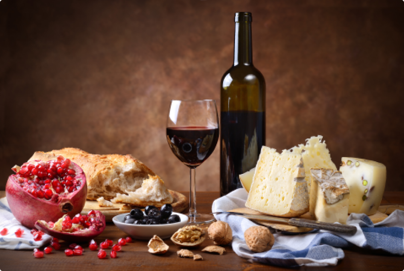

.png)


Ингредиенты
Закваски для сыра
Ферменты для сыра
Хлористый кальций
Плесень для сыра
Кисломолочные закваски
Красители для сыра
Специи для сыра
Оборудование
Формы для сыра
Латексное покрытие
Воск для сыра
Термоусадочные пакеты
Дренажные коврики
Дренажные мешки и салфетки для прессования
Дренажные контейнеры
рецепты сыров

Сочетание
У обоих этих продуктов есть выдержка и история происхождения.
Хотя первый пункт для вина более важен, чем для сыра.
Они идеально дополняют друг друга. Их успешно совмещали сотни
лет назад.
Сейчас количество сортов вина и сыра перевалило за 200. Поэтому
возникают сложности с формированием идеальной комбинации.
Некоторые взаимодействия винных и сырных сортов уже давно стали
классическими. Например, голубой молочный продукт из Англии
Стилтон всегда запивают классическим портвейном. Или же
знаменитый сыр
Рокфор употребляют в пище вместе с сотерном. К
большинству сортов сыра сложно подобрать достойное вино.
Необходимо учитывать множество факторов – пахучесть, соленость,
остроту, жирность, сливочность, кислотность.
Если неправильно подобрать вино или сыр, то вкус обоих продуктов
испортится. Больше всего от неумения сочетать с правильными
сырами страдают красные сухие вина. А вот белые сухие вина
страдают меньше от неудачного соседства.
Сейчас количество сортов вина и сыра перевалило за 200. Поэтому
возникают сложности с формированием идеальной комбинации.
Некоторые взаимодействия винных и сырных сортов уже давно стали
классическими. Например, голубой молочный продукт из Англии
Стилтон всегда запивают классическим портвейном. Или же
знаменитый сыр
Советы по подбору вин и сыров
01
Если есть такая возможность, всегда покупайте сыры из того же региона, откуда было доставлено вино. Сыры, которые использовались при приготовлении горячих блюд, идеально совмещаются с красными или белыми сухими винами.
02
Несколько совершенно разных сортов сыра нельзя запивать одними тем же вином. Особенно это касается сырной тарелки, в которой присутствует Камамбер, голубой сыр, козий и твердый.
03
Чем кислее молочный продукт, тем кислее должно быть и вино. К сливочным и очень жирным сортам всегда подается вино с повышенной кислотностью. Мягкие изделия не должны быть слишком желеобразными, если их планируется совмещать с игристым напитком.
04
Красные напитки с небольшим содержанием танинов комбинируют с малосольными твердыми сырами. Чем сложнее аромат молочного продукта, тем старее должно быть вино.
популярные рецепты
Сырная тарелка
Особенно характерно наличие дырочек разных размеров в структуре швейцарских сортов...
Читать далее >
Сырная тарелка
Особенно характерно наличие дырочек разных размеров в структуре швейцарских сортов...
Читать далее >
Сырная тарелка
Особенно характерно наличие дырочек разных размеров в структуре швейцарских сортов...